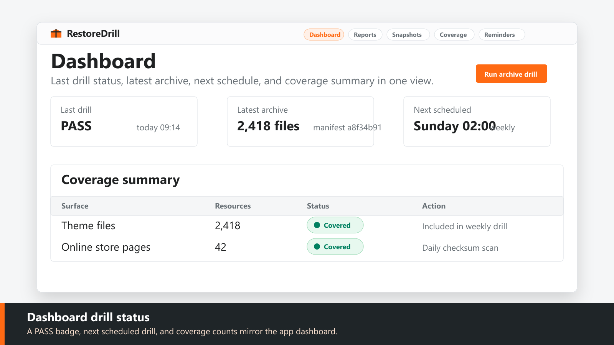
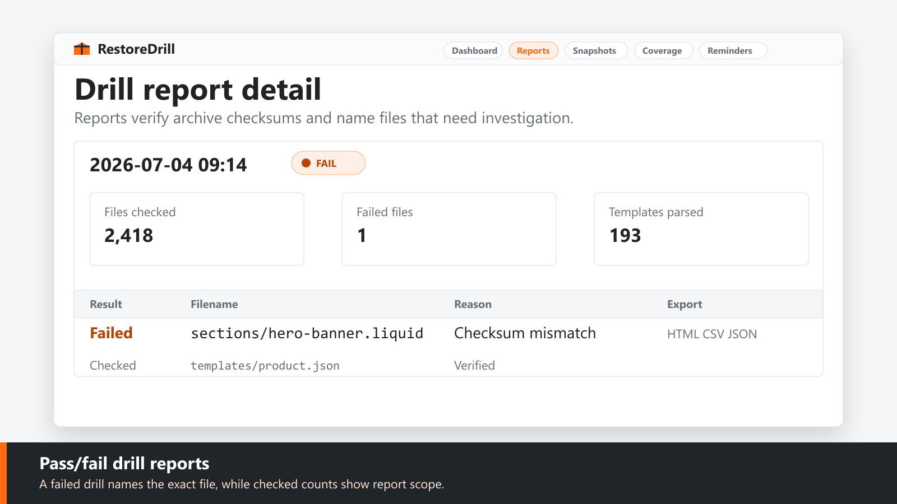
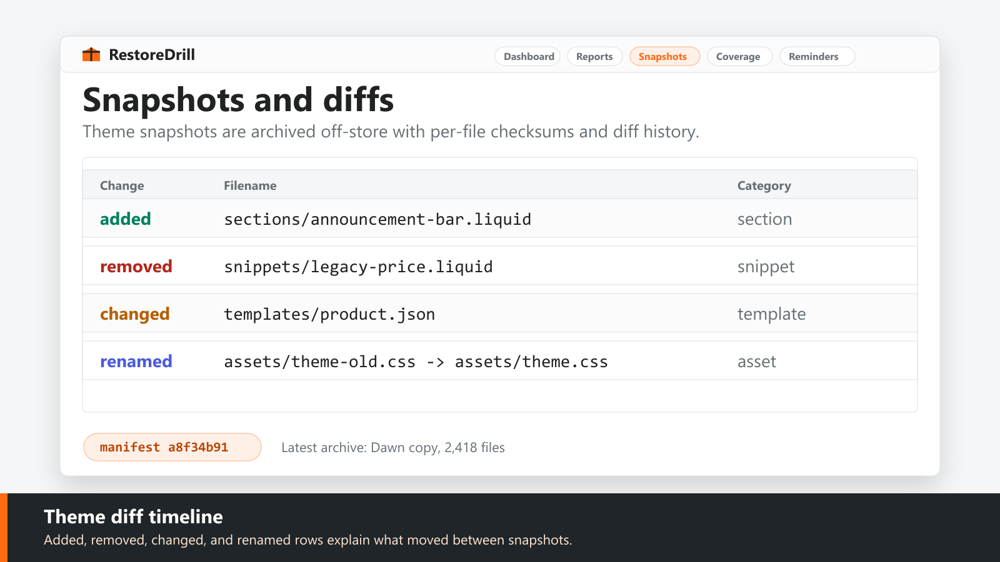
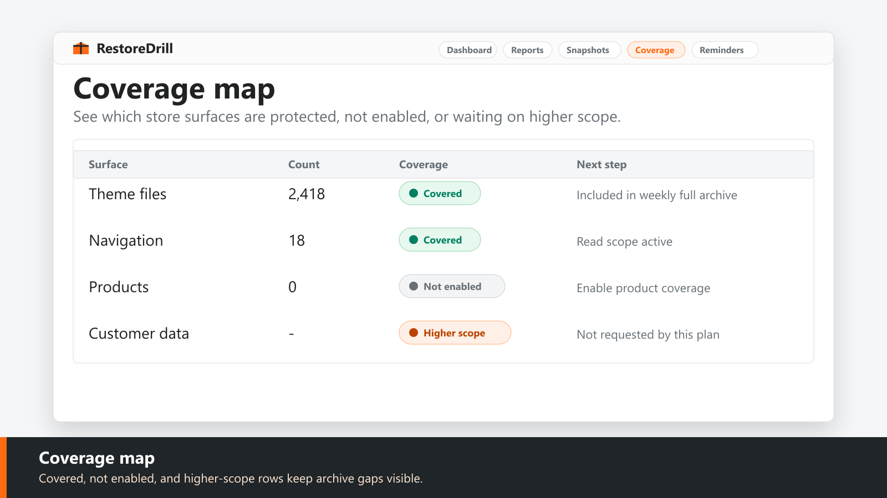
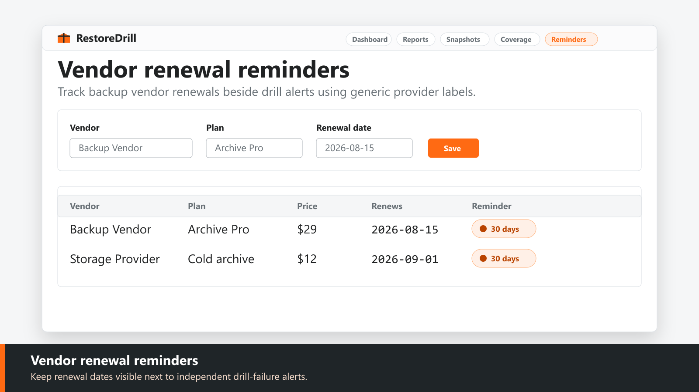

$10/month · 7-day free trial
RestoreDrill Backup Verify
Verify your backups actually restore - before you need them
RestoreDrill archives themes weekly, then runs a real drill: it re-reads the archive, verifies every file checksum, and parses templates so merchants get a pass/fail report. Theme diffs show what changed between snapshots, and a coverage map shows what is protected, what is not, and what needs attention.
Coming to the Shopify App StoreWhat it does
- Weekly automated restore drills with pass/fail integrity reports
- Theme snapshots archived off-store with per-file checksums
- Theme diff timeline for changed, added, and removed files
- Store coverage map showing what is and is not protected
- Backup vendor renewal reminders and drill-failure alerts
Pricing
$10/month
7-day free trial. One focused plan for the features listed here.
Screenshots





FAQ
Does RestoreDrill change my live store?
No. The MVP is read-only and non-destructive. Live theme write drills are planned for a future explicit write_themes upgrade.
Does it guarantee recovery?
No. It verifies archive readability, checksums, templates, diffs, and coverage gaps; it does not promise guaranteed recovery.
Where are archives stored?
Theme archives are stored off-store in Cloudflare R2, with manifests and checksums stored in D1.
Does it read orders or customers?
No. It requests read-only theme, product, online store page, and online store navigation scopes. It does not request customer, order, fulfillment, or checkout scopes.
Coming to the Shopify App Store
The store link will be added after app review approval.